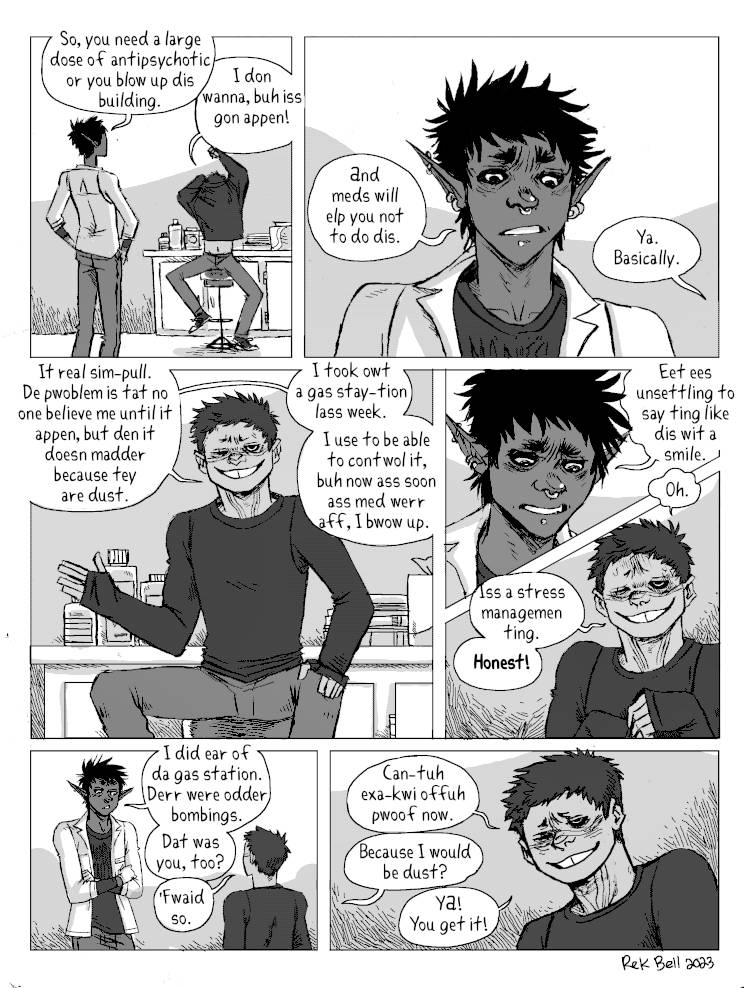
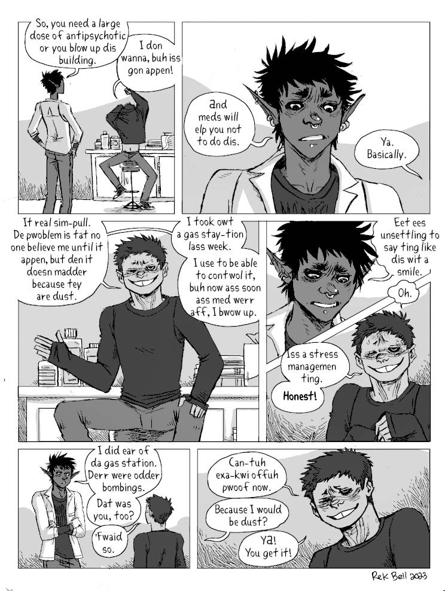

About
About Projects
Projects Books
Books Games
Games Stories
Stories Store
Store Notes
Notes How-to
How-toChase
Context. Many human hostiles go to the woods with the goal to hunt dae(also known as the ToT, the 'Terror of the Taiga'), and the Solomon's Devils down. On one of his runs, he stumbles on a camp. Dae is worried, and decides to go and take a closer look.
I will add sequences that precede and follow this one soon.
Content Warning. Some fighting/violence, blood, swearing.


 



See the following sequence, named the tot.
Go back to the hakum main page.